Amethyst Infrared Camera
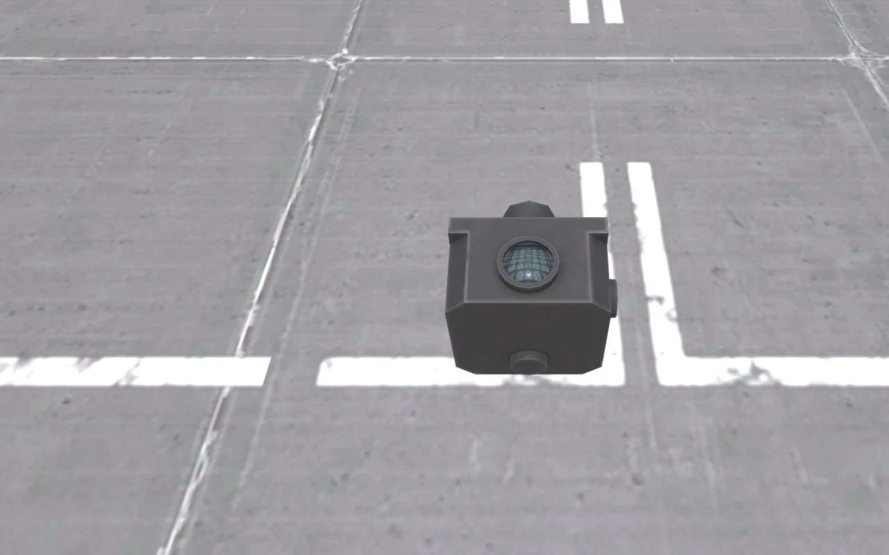

Amethyst Solar Wing
Amethyst Visible Light Camera
Beryl 62-A "Skitrener " Control Block
Beryl Solar Wing
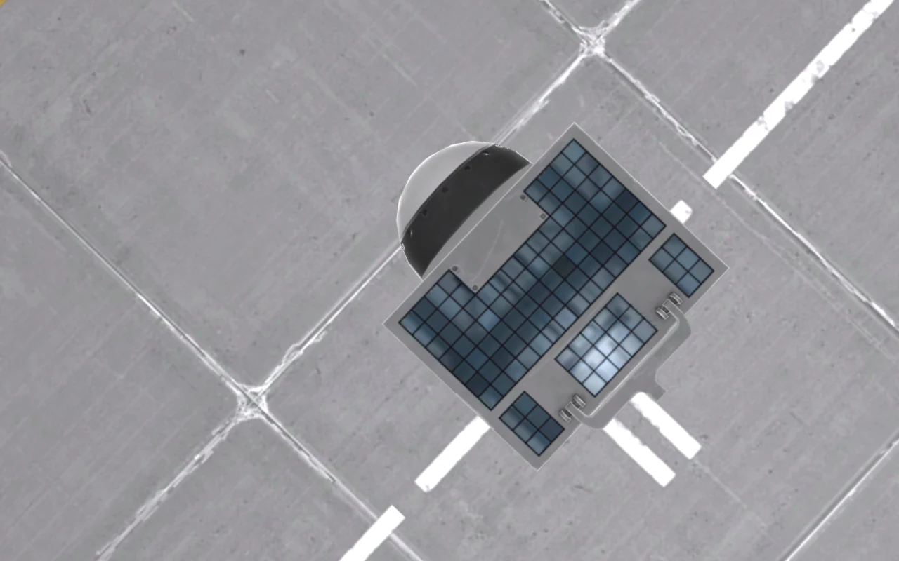

Emerald Laser Reflector
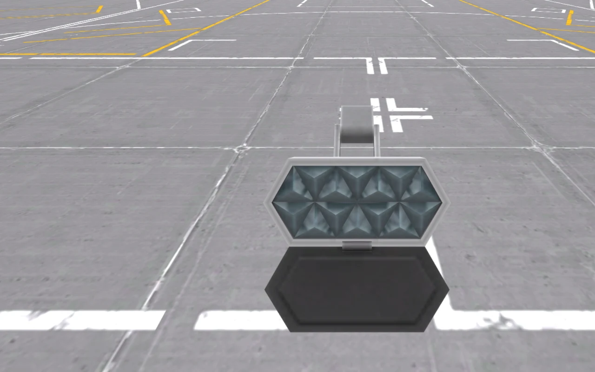

Emerald Size 1 Solar Panel
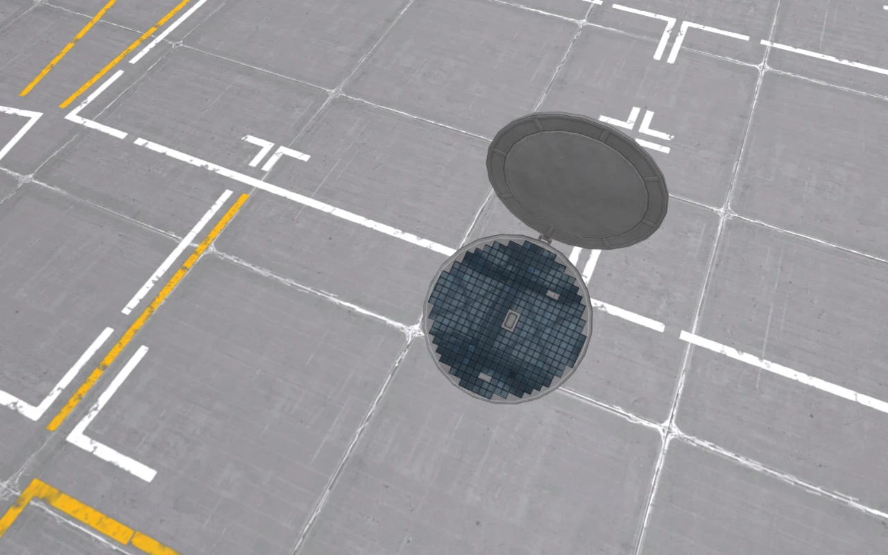
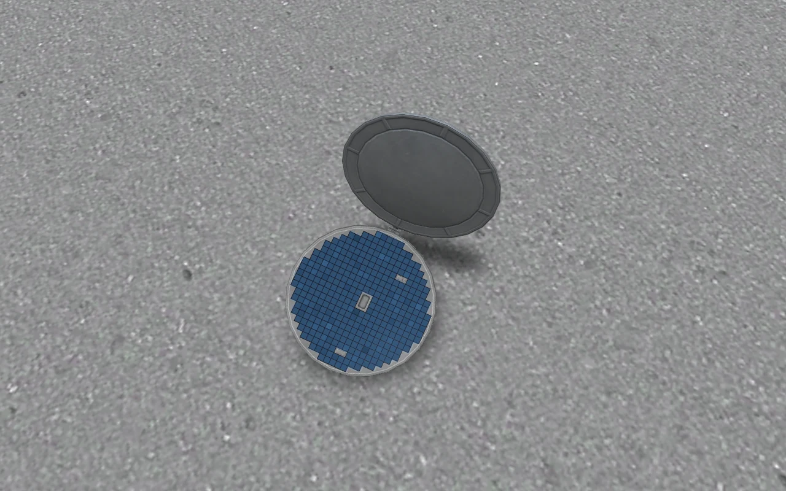
Emerald Visible Light Camera A
Emerald Visible Light Camera B
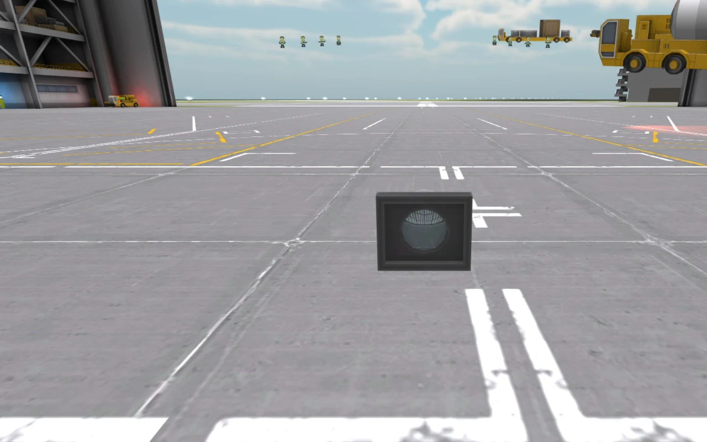

Garnet Visible Light Camera
Opal Solar Wing
Opal Ultraviolet Light Camera
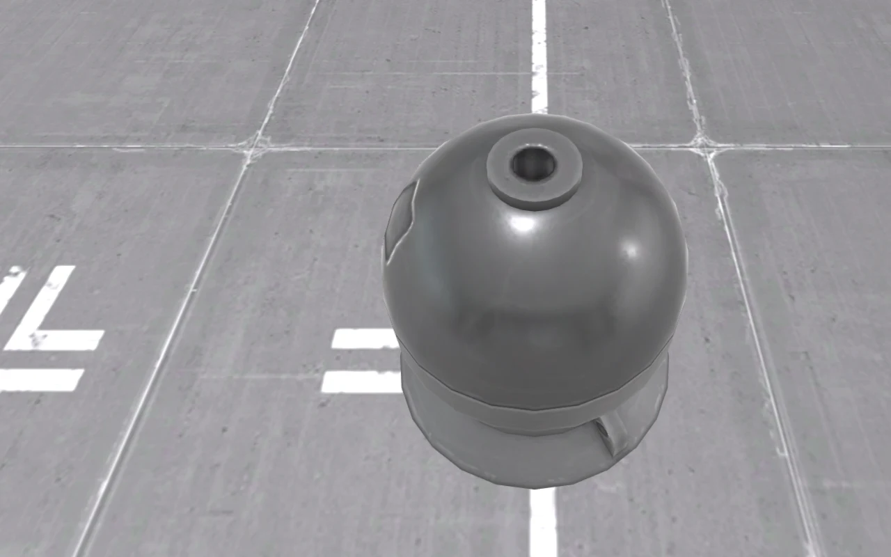

Opal Visible Light Camera

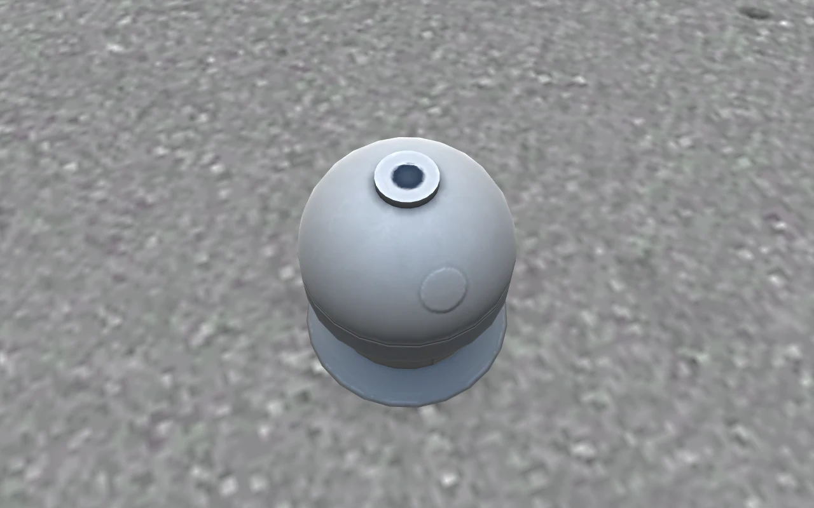
Pear Solar Wing

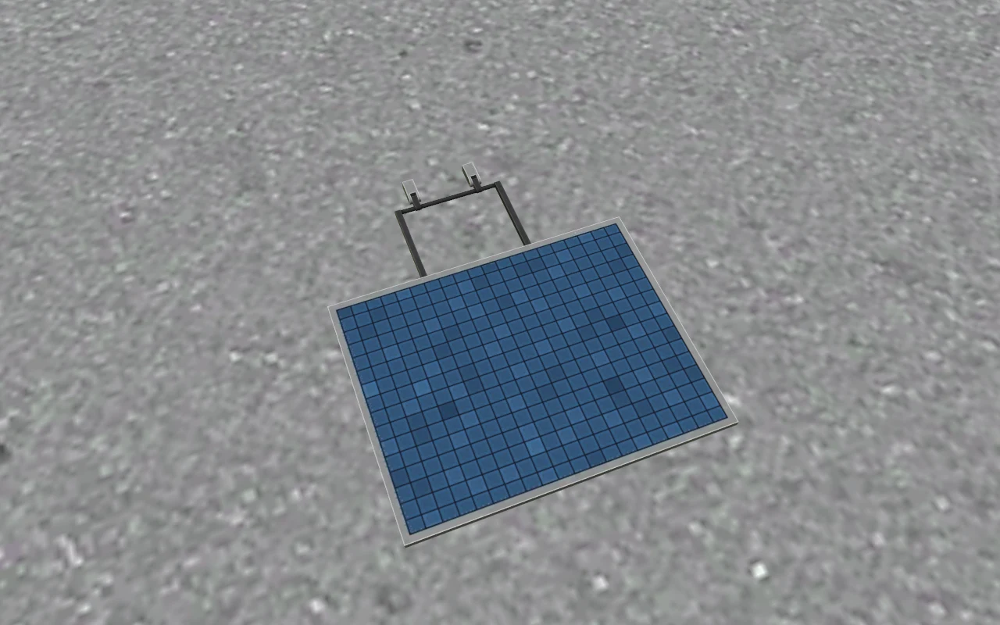
Pearl Visible Light Camera

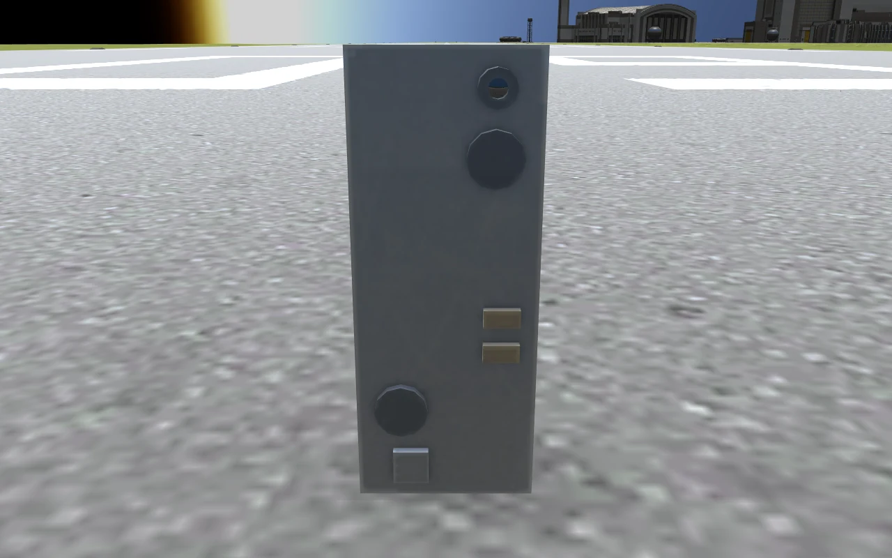
Quartz 62-B "Skjultskatt" Control Block

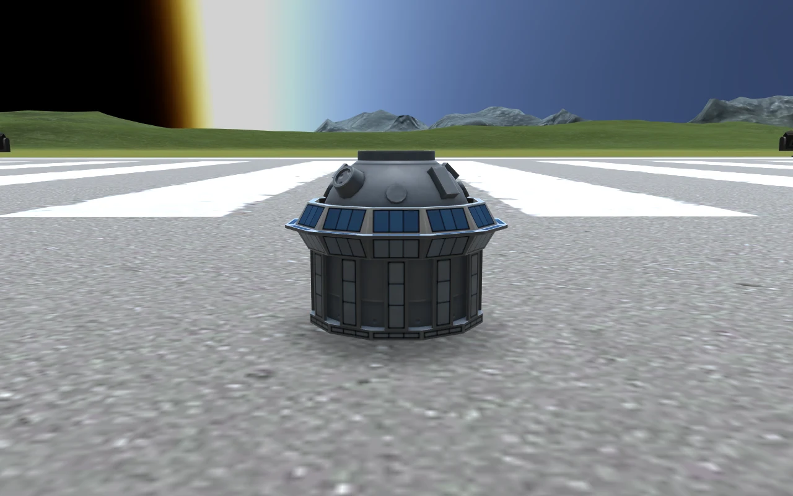